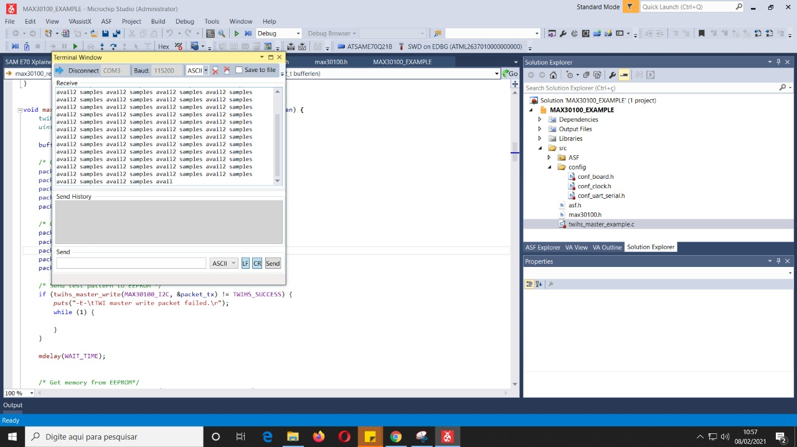
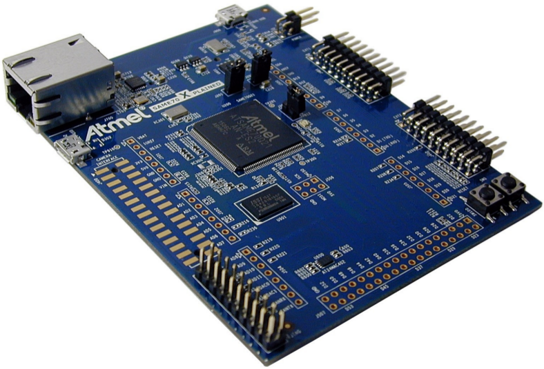
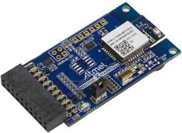
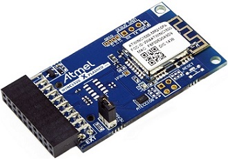
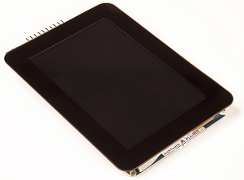
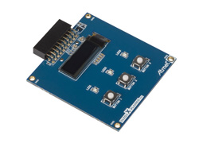

Ferramental¶
Sobre o hardware e software utilizados no curso.
- Software: Microchip Studio
- Hardware: SAME70 (Cortex M7)
Softwares¶
Linux e MAC
- A infra só funciona no Windows!
- Se for virtualizar, não funciona no VirtualBox! Deve utilizar o VMware como máquina virtual (ou parallels).
O MicrochipStudio, IDE utilizado para programação dos microcontroladores ARM da microchip (usado no curso), é nativo Windows.
Se for virtualizar, utilizar o VMware Player pois o VirtualBox possui problemas com o driver USB do gravador.
Note
Até 2021 o nome do programa era AtmelStudio, mas recentemente mudou de nome para Microchip Studio .

Para mais infomrações sobre o software, acesse:
Windows 10¶
reservar 2h para instalação
Instalar os seguintes softwares no Windows:
- Microchip Studio 7 - Instalar a versão WEB
- Serial Port for MicrochipStudio
- git/github
Linux/ MAC¶
reservar 4h para instalação
- Instalar o VMWare player e instalar o Windows 10 na máquina virtual.
- MAC, pode usar o Parallels para virtual.
- NÃO USAR VIRTUALBOX, USAR VMWARE PLAYER
- Efetuar o boot no pendrive.
- Instalar os softwares listados na secção Windows.
Alerta para usuários de Linux e Windows
Não funciona no VirtualBox! Deve utilizar o VMware como máquina virtual
Kit de desenvolvimento - ATSAME70-XPLD¶
O kit de desenvolvimento escolhido para o curso é o SAM E70 Xplained 3 desenvolvido pela Microchip e possui como principais características:
- SAM-E70 high-performance ARM Cortex-M7 core-based MCU
- Ethernet, HS USB, SD card
- Embedded debugger

Arquitetura do uC¶
-
Processador ARM: Possui ampla dominação do mercado de microprocessadores/controladores1; não é exclusivo de um único fabricante2; arquitetura de 32 bits.
-
Cortex M: família M é classificada como a de microcontroladores, possuindo uma arquitetura interna menos sofisticadas das demais (A,R), possibilitando um melhor entendimento de seu funcionamento.
Hardware extras¶
Periféricos extras podem ser adicionados ao kit para incluir funcionalidades tais como : bluetooth 4.0; wifi; LCD.
Bluetooth - BTLC1000 Xplained Pro Evaluation Kit¶
http://www.atmel.com/pt/br/tools/ATBTLC1000-XPRO.aspx\ Periférico para adicionar a comunicação bluetooth 4.0 ao kit de desenvolvimento.
Especificação :
- The Microchip® ATBTLC1000-MR110CA BLE module with 2.4GHz BLE4.1 compliant ATBTLC1000A SoC (System on Chip)
- On Board Temperature Sensor

WIFI - ATWINC1500-XPRO¶
Módulo necessário para acrescentar comunicação wifi ao kit.
Especificação:
- IEEE 802.11 b/g/n 20MHz (1x1) solution
- Supports IEEE 802.11 WEP, WPA, and WPA2 Security
- SPI, UART, and I2C host interface

LCD maXTouch Xplained Pro¶
https://www.microchip.com/developmenttools/ProductDetails/ATMXT-XPRO
Módulo para adicionar LCD colorido com touch screen ao kit de desenvolvimento.
Especificação :
- ILI9488 LCD Driver
- 480x320 Resolution
- Parallel interface (up to 18-bits)
- 3 & 4 wire SPI interface
- maXTouch capacitive touch screen controller

OLED1 Xplained Pro¶
Módulo com OLED de 32 linhas.
- OLED display 128x32 (SPI)
- 3 LEDs
- 3 push buttons

-
http://www.investopedia.com/stock-analysis/061115/3-key-numbers-arm-holdings-investors-need-know-armh.aspx ↩
-
ARM não produz CIs mas fornece a arquitetura para fabricantes de chips (Microchip, Texas, Nvidia,...) ↩
-
https://www.microchip.com/developmenttools/ProductDetails/atsame70-xpld ↩